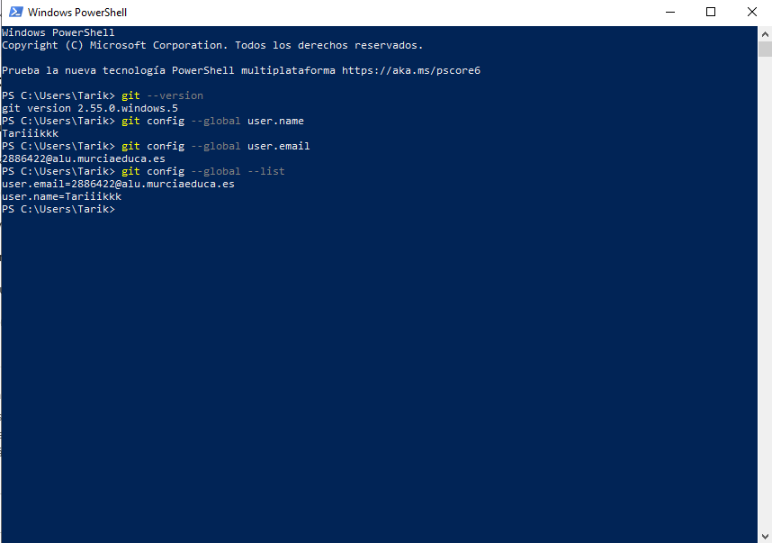

1. Instalación y configuración de Git
Git es un sistema de control de versiones utilizado para gestionar el código del proyecto y realizar un seguimiento de los cambios realizados.
El control de versiones permite guardar un historial de las modificaciones realizadas sobre los archivos del proyecto. De esta forma, es posible consultar los cambios realizados y trabajar con diferentes versiones del código.
En este apartado se instala Git en el equipo y se configura la identidad del usuario que realizará los commits.
Instalación de Git
Como el equipo parte de una instalación inicial y no dispone de Git, el primer paso consiste en descargar e instalar la herramienta.
Git se puede descargar desde su página oficial:
https://git-scm.com/
Una vez descargado el instalador correspondiente a Windows, se ejecuta y se siguen los pasos indicados por el asistente de instalación.
Durante la instalación se pueden mantener las opciones que aparecen por defecto.
Una vez finalizada la instalación, se abre una nueva terminal para comprobar que Git está disponible.
Comprobación de Git
Para comprobar que Git se ha instalado correctamente se ejecuta:
git --version
git config --global user.name
git config --global user.email
git config --global --list
Resultado
La siguiente captura muestra la versión de Git instalada y la configuración del usuario:
